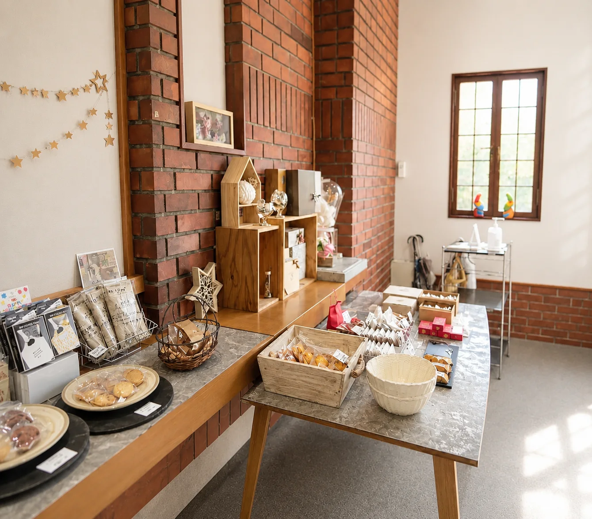

前田 多映
安心して、
おいしい。
毎日変わらず、
安心して食べられる
お菓子を。
安心は、
おいしさの一部です。
おいしさは、味だけではありません。
安心して食べられること。
大切な人にも贈れること。
また食べたくなること。
それが、おいしさです。

Ingredients
安心は、
素材から始まります。
植物性油脂は使いません。
マーガリンも使いません。
北海道産の純正クリーム。
北海道産のバター。
見えないところほど、丁寧に選ぶ。
その積み重ねが、安心につながると信じています。

Craftsmanship
見えないところほど、
丁寧に。
完成したお菓子を見る人はいても、
その途中を見る人は、あまりいません。
だからこそ、
誰も見ていない時間を大切にしています。
お菓子の写真

特別なことではありません。

毎日少しずつ変えながら。

誰かのおやつになりますように。

Gift
贈るのは、
お菓子だけではありません。
「ありがとう。」
「おめでとう。」
「元気でいてね。」
その気持ちも、そっと包んでいます。

COCO
この場所で、
今日も変わらず。
大きなお店ではありません。
たくさん作れるお店でもありません。
だからこそ、
ひとつひとつを、丁寧に。